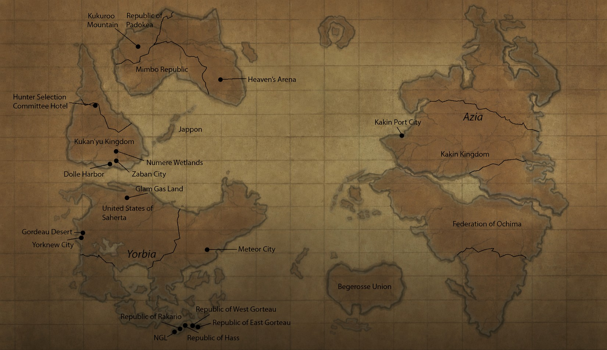

せかいちずWorld Map
ちず の いち を クリック して ください。ドラッグ で いどう、＋／－ で ズーム できます。 Click any marker to open its record. Drag to pan, use +/− to zoom. Gold circles are cities and landmarks; navy squares are regions and territories.

ドラッグ・ズーム かのうDrag & zoom